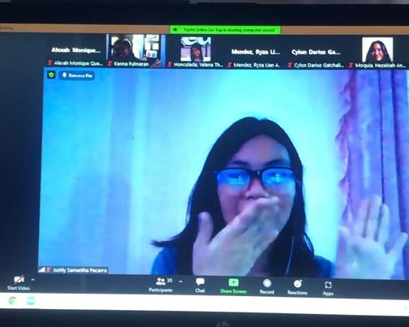

As a student engaged in online learning, I can say that online learning is not as easy as other people say it is. It's hard adjusting to all the new changes. Everything just happens so fast, it's overwhelming. I noticed that I am not that participative and involved in class as much as I used to during face-to-face which is dissapointing considering that I want to make my family proud. I am trying to adapt to these changes with the help of those who love me. Online learning has its disadvantages but of course it also has advantages. It might not be the same as before but I hope I can grow as a person even through this pandemic.
